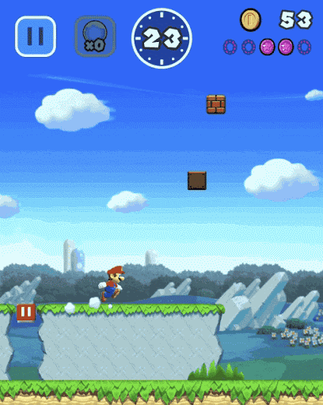
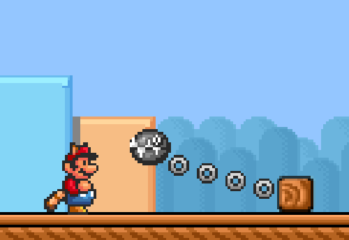
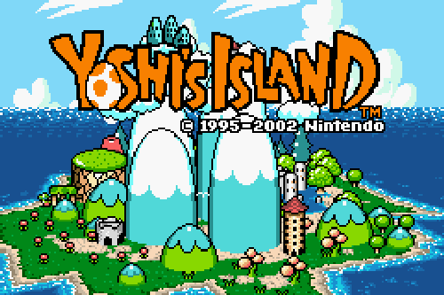

Super Mario Run
Een nieuw soort Super Mario-game, die je met één hand kunt spelen! Je bestuurt Mario door het scherm aan te raken terwijl hij automatisch door het level rent.

Mario Maker
Steek de handen uit de mouwen en bouw de Super Mario-levels waar je altijd al van hebt gedroomd in Super Mario Maker 2, exclusief voor de Nintendo Switch!

Super Mario 3
Super Mario Bros. 3 introduceert een tal van vooruitgangen t.o.v. het originele Super Mario Bros., zoals de toevoeging van een wereldmap, meer vijanden en level-types.

Yoshi's Island
Yoshi's island is een spel waar elk level weer iets nieuws biedt van vijanden tot uitdagingen. Dit houdt het spel door de hele speeltijd interessant en uitdagend.